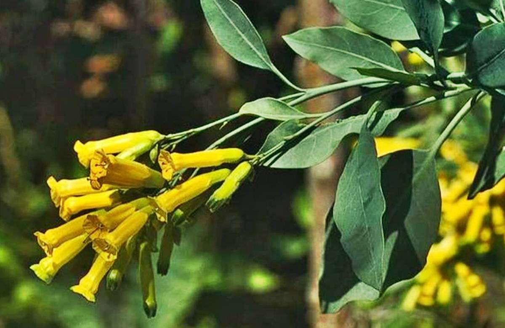
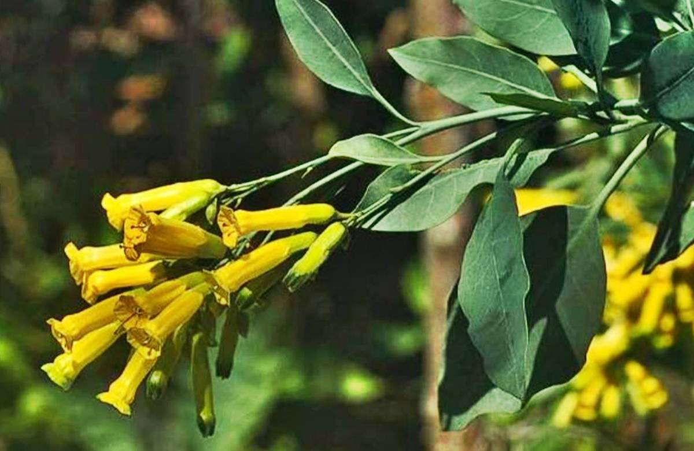

Introducción
Según la OMS: son plantas que contienen sustancias que pueden usarse con fines terapéuticos.
Son una alternativa natural y orgánica que nos provee nuestra Madre Tierra, la cual sirve para combatir enfermedades, dolores y molestias de todo tipo. El uso de las plantas medicinales fue originalmente documentado por la ancestral medicina China y luego fue dispersándose por múltiples culturas hasta lo que conocemos actualmente.
Muchas de ellas son fáciles de conseguir y muy versátiles. Pueden ser consumidas en un té (infusión) o en el mate de todos los días.
 
